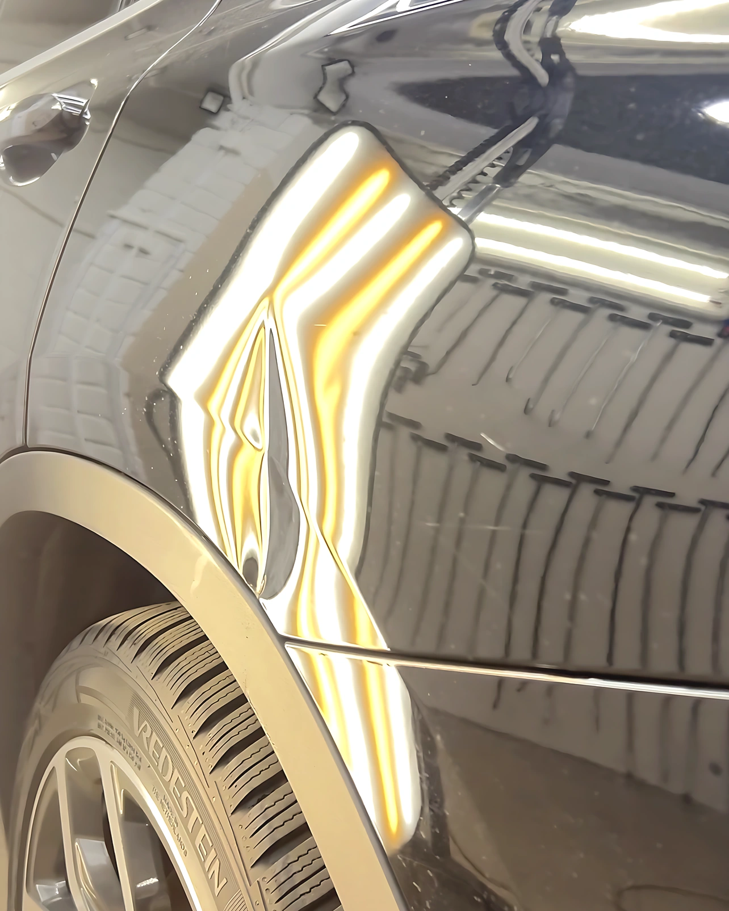
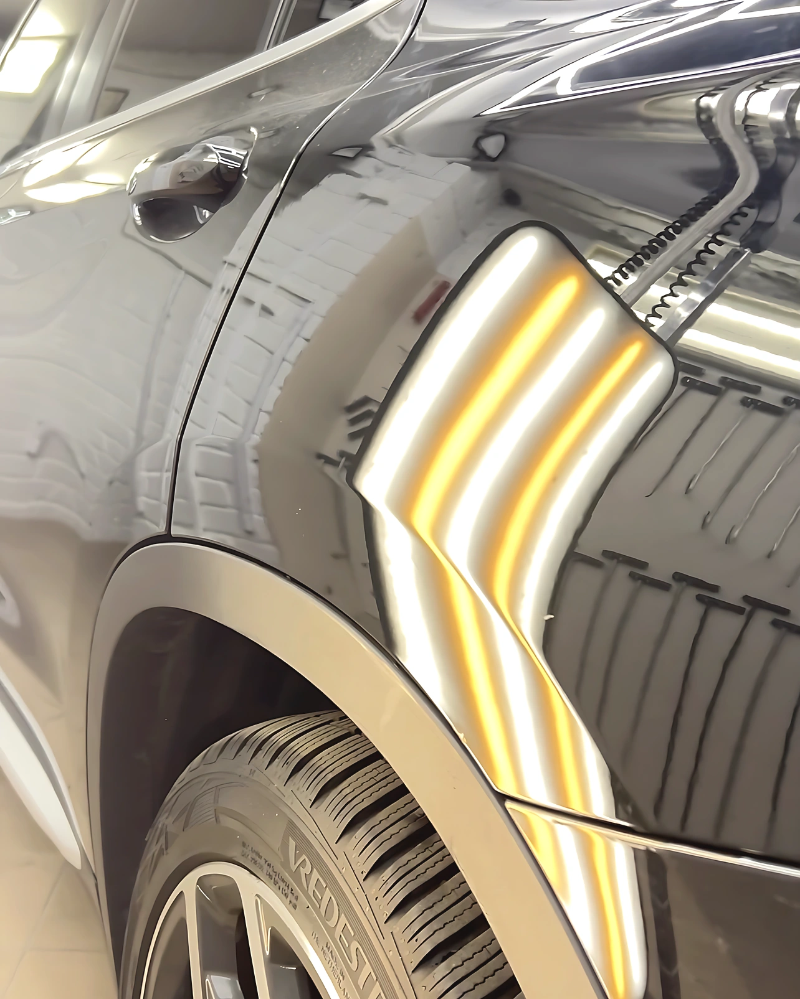
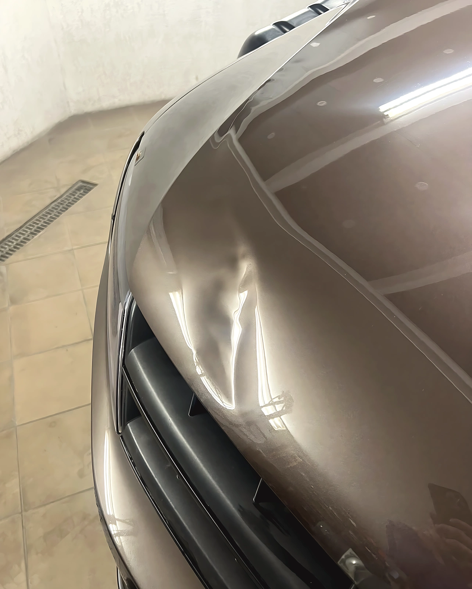
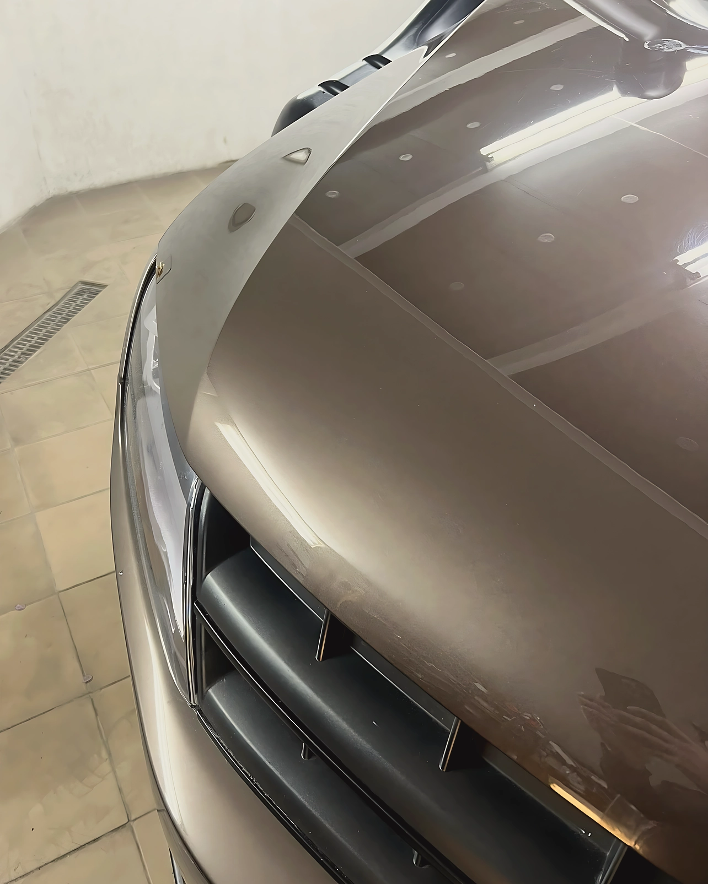
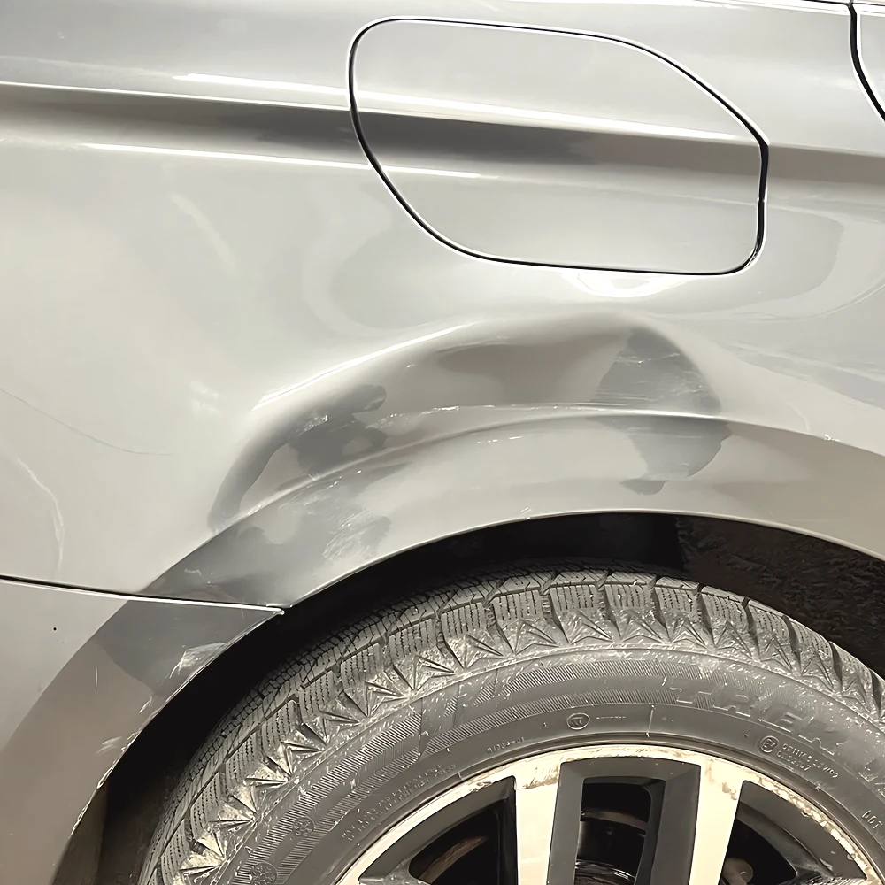
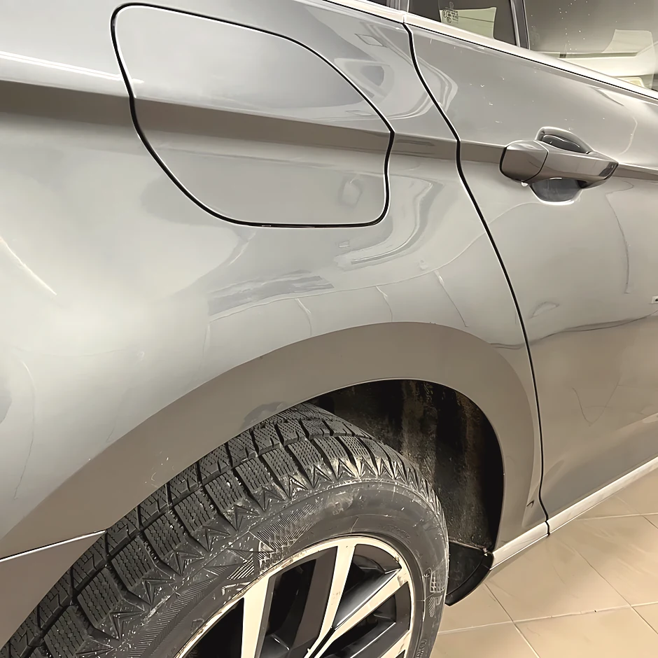

Įlenkimų šalinimasbe dažymo Kaune
Meninis lyginimas, kėbulo poliravimas ir Ceramic Pro nanodanga.
Prieš

Po

Prieš

Po

Prieš

Po

Prieš

Po

Kodėl be dažymo
| Kriterijus | Meninis lyginimas | Dažymas |
|---|---|---|
| Gamyklinis lakas | išsaugomas | nušlifuojamas |
| Glaistas | nenaudojamas | naudojamas |
| Dažų storio matuoklis | rodo originalą | rodo perdažymą |
| Spalva | lieka gamyklinė | derinama |
| Automobilio istorija | be perdažymo | su perdažymu |
Ne kiekvieną pažeidimą galima ištaisyti PDR metodu, nes lakas turi būti sveikas. Ar jūsų atveju įmanoma, pasakysime iš nuotraukos arba apžiūrėję vietoje.
Įvertinti pagal nuotraukąPrieš

Po

Prieš

Po

Ką darome
Pirmiausia ištaisome kėbulo formą, tada nupoliruojame paviršių ir tik tada dengiame apsauginę dangą.
- Taip pat atliekame
- Krušos pažeidimų šalinimas · žibintų poliravimas · salono poliravimas · gilioji dekontaminacija (dervos, metalo dulkės) · įdaužų maskavimas dažais pagal gamyklinį spalvos kodą · ardymo ir surinkimo darbai
- Įkainis
- nuo 40 €/val. Galutinė suma priklauso nuo pažeidimų kiekio ir kėbulo būklės.
-

Meninis lyginimas
Įlenkimus išspaudžiame iš vidinės pusės arba ištraukiame iš išorės, kai prieigos į vidų nėra. Tvarkome duris, sparnus, statramsčius, krušos pažeidimus.
-

Kėbulo poliravimas
Pakopomis nupoliruojame sūkurius, plovyklos žymes ir smulkius įbrėžimus. Nupoliruotas paviršius kartu yra paruošimas dangai.
-

Apsauginė danga
Keraminę arba grafeno dangą dengiame ant jau sutvarkyto paviršiaus, dirbame su Ceramic Pro ir Artdeshine sistemomis. Kėbulas tampa lengviau plaunamas, o blizgesys laikosi ilgiau nei po vaško.
Studija
Studijoje įrengtas šešiakampis LED apšvietimas ir mobilios šviesos lentos. Visus darbus atlieka pats Mindaugas.
- Patirtis
- 11 metų
- Įvertinimas
- 5,0
- Rekomendacijos
- 100 % iš 18
„Nupoliravo nubrozdintas vietas gražiai, kruopščiai ištiesino mažus įlenkimus ant kėbulo.“
Kipras · Seat Ibiza · patvirtintas atsiliepimas
Darbai
Baigti automobiliai studijos apšvietime.
-
BMW M4 · matinis žalias kėbulas -
BMW i5 · šešiakampis atspindys kapote -
BMW i5 · galas studijos šviesoje
Atsiųskite įlenkimo nuotrauką.
Nufotografuokite pažeidimą taip, kad kadre matytųsi šviesos atspindys. Iš jo įvertiname įlenkimo gylį ir atsakome telefonu arba el. paštu.
- Telefonas+370 633 33969
- El. paštasbfr082@gmail.com
- MessengerRašyti žinutę
- Instagram@_minerda_
- AdresasV. Krėvės pr. 129A, Kaunas
- Darbo laikasI–V 09:00–17:00 · VI–VII nedirba